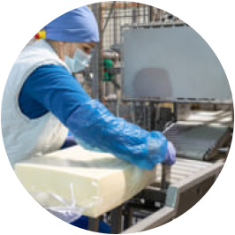

すき家のMMD
（マス・マーチャンダイジング・システム）
すき家では、使用している食材を調達から
加工、流通、店舗での販売までを一貫して自社で
企画・設計、運営しています。
これはすき家独自のビジネスモデルです。
“MMD（マス・マーチャンダイジング・システム）” を採用することによって、
一貫した安全管理体制を構築でき、そして同時に品質のよいものを楽しめる、
“すき家の味・おいしさ”を実現しています。
経営プライオリティ
安心
品質
コスト
すき家は、何よりも食の安全確保が第一と考えています。
安全性を確保するために業界にさきがけていち早く食品安全保証本部を設置し、
検査・モニタリング機能を強化し、維持しています。
自分たちが自信をもって「安全で品質がよい」といえるものだけを提供しています。
食の安全を確保する体制を整備
食品安全保証本部を中心に、食材・製品の微生物検査、
食材の残留農薬や重金属等の分析、放射線や遺伝子組み換え食品の検査、
加工工場や物流の衛生管理および検査、店舗の管理・検査等、
すき家に関わるものすべてをチェックしています。